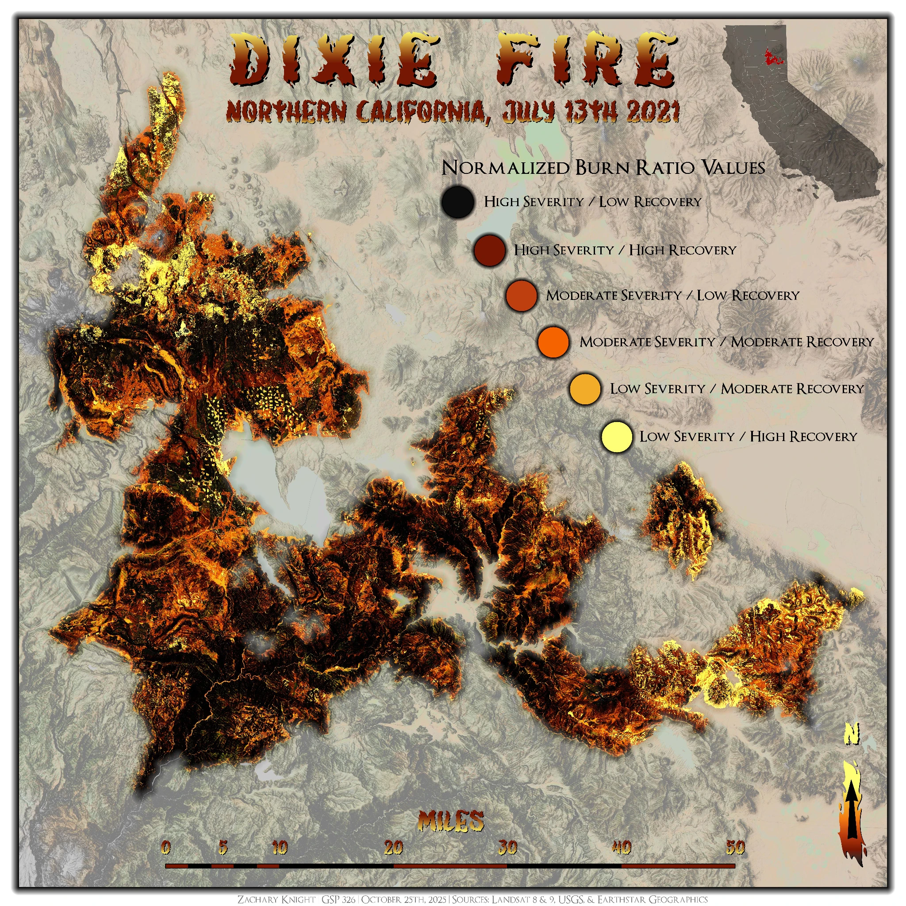

Wildfire burn severity
Dixie Fire
Burn severity and recovery · Northern California, July 2021

About this map
A burn-severity map of the July 2021 Dixie Fire in Northern California. The classified imagery distinguishes areas of high, moderate, and low burn severity alongside recovery categories, as indicated by the normalized burn ratio legend. Terrain shading provides geographic context for the burned areas.